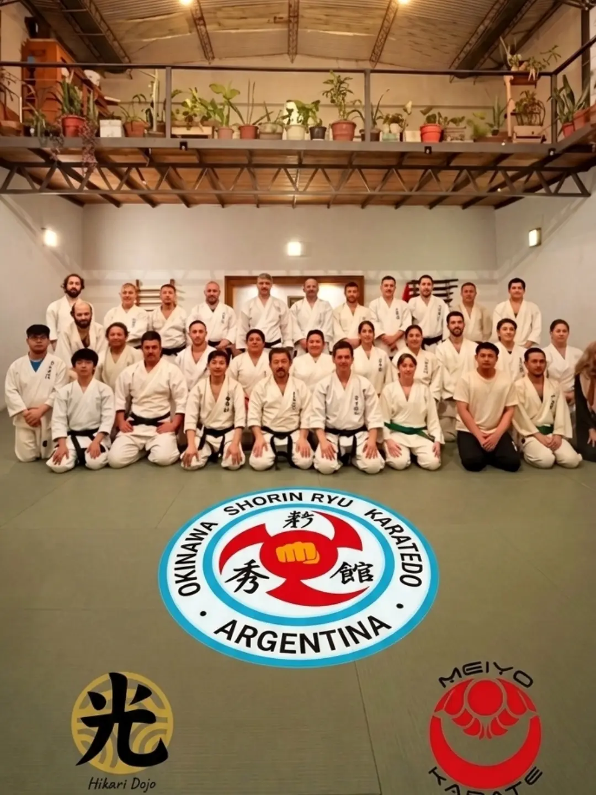
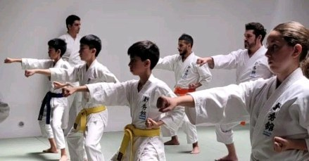
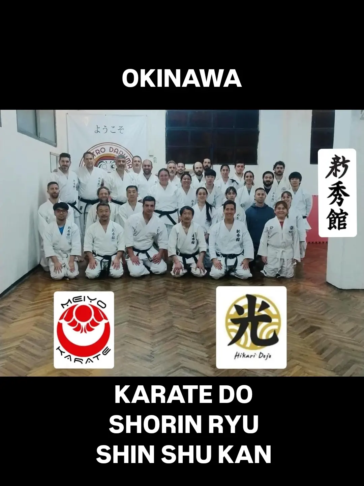
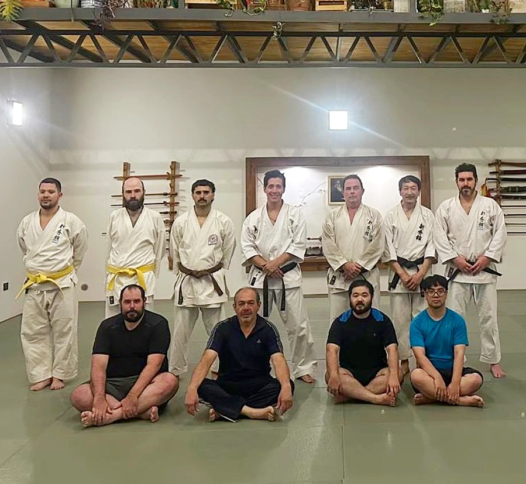
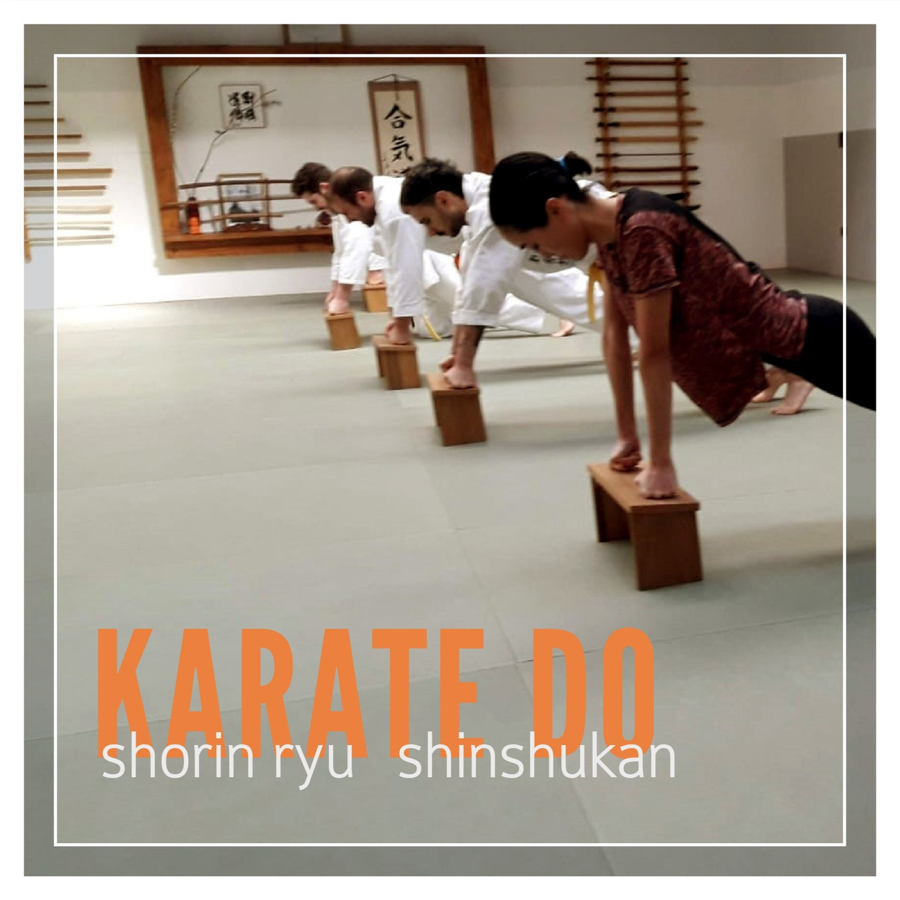
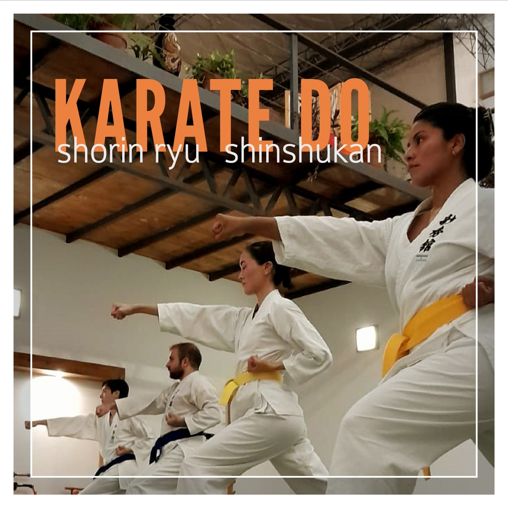
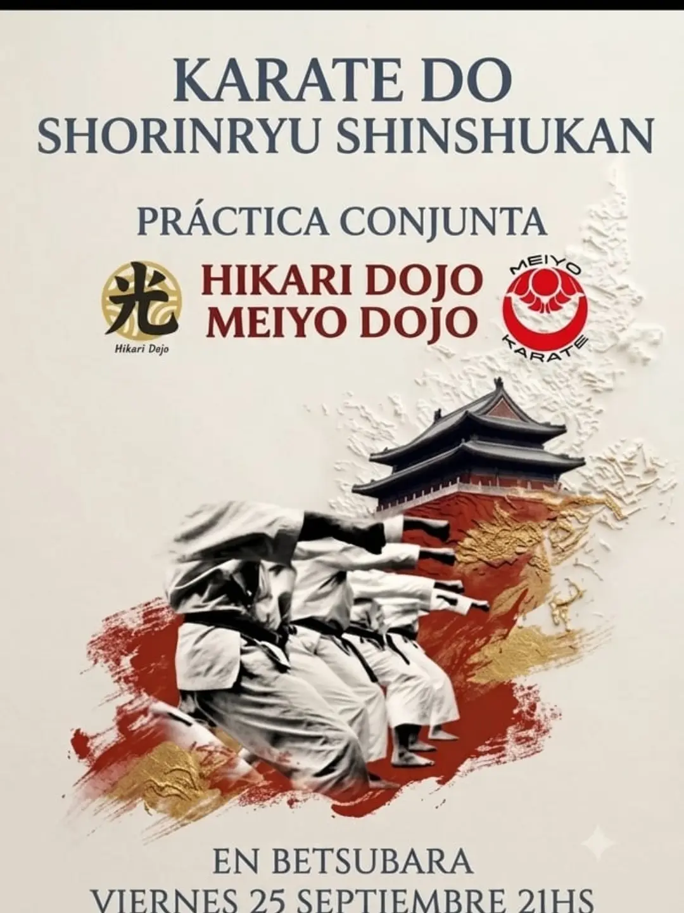
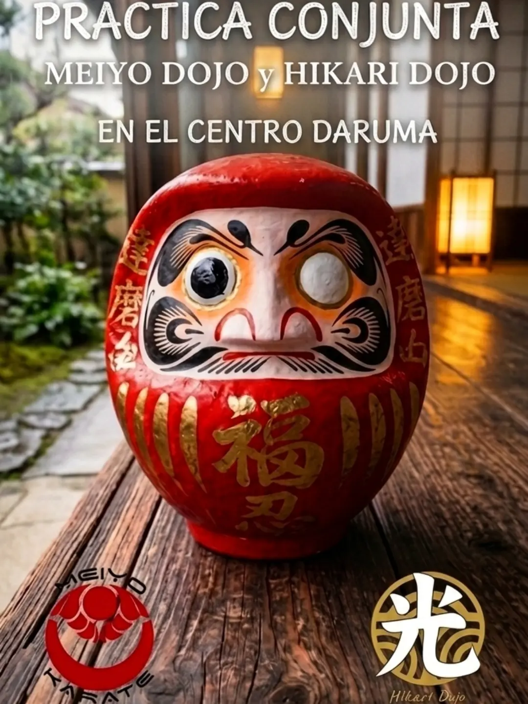
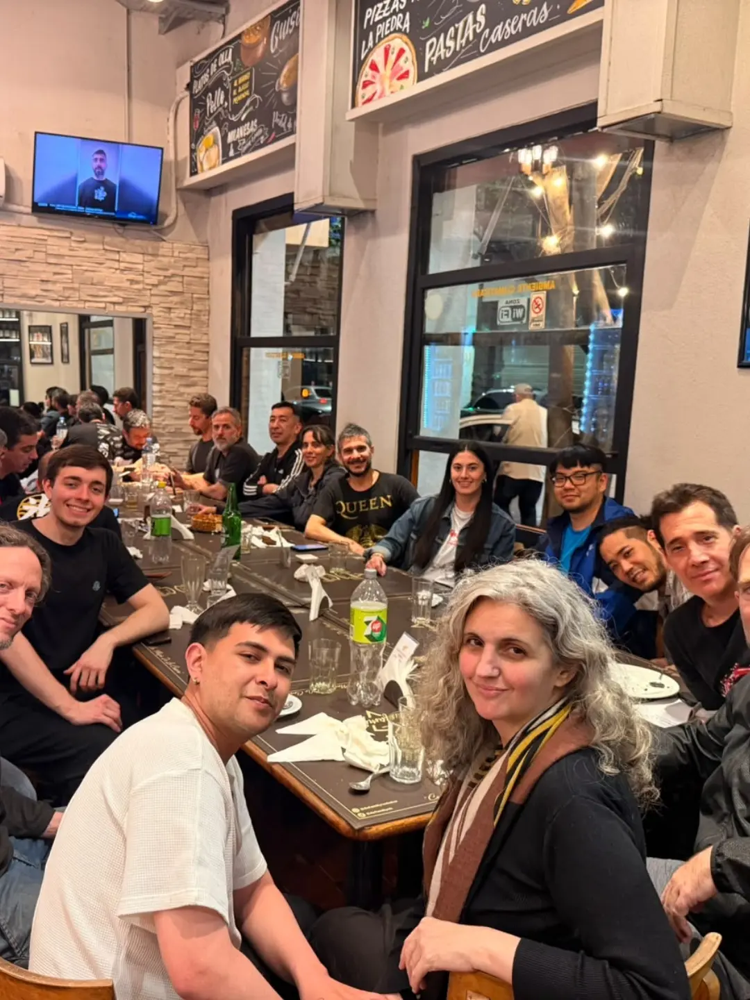
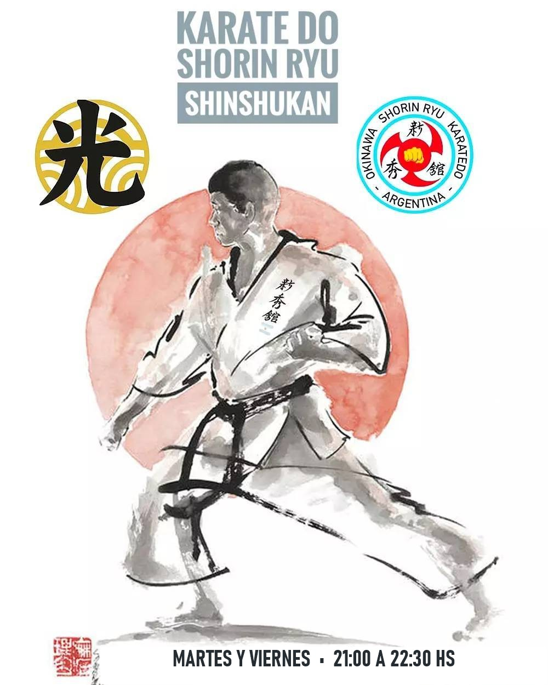

空
1. Karate Do
El camino de la mano vacía nacido en Okinawa. Desarrolla coordinación, velocidad, potencia de impacto, defensa personal real (Bunkai) y respeto mutuo dentro y fuera del tatami.
Arte Marcial Tradicional de OkinawaKarate Do · Shorin Ryu Shinshukan
Escuela tradicional de Okinawa en Villa Crespo. Kihon, Kata y Kumite con Sensei Gustavo Talavera.
Martes y Viernes · 21:00–22:30Nuestra práctica preserva las raíces del Karate de Okinawa bajo los estándares técnicos y éticos de la escuela Shorin Ryu Shinshukan en nuestro espacio Hikari Dojo, bajo la dirección del Sensei Gustavo Talavera.
El camino de la mano vacía nacido en Okinawa. Desarrolla coordinación, velocidad, potencia de impacto, defensa personal real (Bunkai) y respeto mutuo dentro y fuera del tatami.
Arte Marcial Tradicional de OkinawaRepresentada por nuestro escudo oficial con el Hidari Gomon rojo de Okinawa, el puño dorado central y los kanjis 新秀館. Formación rigurosa en Kihon, Kata tradicional y Kumite.
Okinawa Shorin Ryu • ArgentinaNuestro dojo en Villa Crespo (Espacio Betsubara) a cargo del Sensei Gustavo Talavera, donde cada Martes y Viernes entrenamos adolescentes y adultos.
Sensei Gustavo TalaveraEntrenamos los Martes y Viernes de 21:00 a 22:30 hs en el Espacio Betsubara Dojo (Villa Crespo).
Recorrido por nuestras prácticas conjuntas interdojos, exámenes de graduación (Kyus), entrenamientos de Kihon, Kata, Hojo Undo y encuentros de camaradería de Karate Do - Shorin Ryu Shinshukan - Hikari Dojo bajo la dirección del Sensei Gustavo Talavera (6° Dan).

和 Práctica ConjuntaJornada especial de entrenamiento conjunto en nuestro tatami de Betsubara Dojo reuniendo a los practicantes de Hikari Dojo (Sensei Gustavo Talavera) y Meiyo Dojo (Sensei Hernán Ashifu) bajo el emblema de Okinawa Shorin Ryu Karatedo Shinshukan Argentina.

段 Examen de GradosInstancia de evaluación técnica y marcial de alumnos de Hikari Dojo (Gustavo Talavera) y Meiyo Dojo (Hernán Ashifu), honrando los principios del Budo y la memoria de Emiko Ganiko Sensei (Gajimaru Dojo).

社 Encuentro EspecialPráctica conjunta e intercambio marcial de Karate Do - Shorin Ryu Shinshukan fortaleciendo los lazos de fraternidad entre dojos hermanos de la escuela.

館 Vida en el TatamiFinal de clase junto al Sensei Gustavo Talavera (6° Dan) frente al Shomen y los armeros tradicionales de madera en nuestra sede de Villa Crespo.

力 Hojo UndoTrabajo de acondicionamiento físico marcial sobre soportes de madera en el tatami, cultivando la firmeza de impacto (Seiken), la postura y la perseverancia propia de Okinawa.

型 Kihon & KataEjecución técnica coordinada en el tatami de Betsubara Dojo. El entrenamiento constante desarrolla velocidad, equilibrio, defensa personal y foco mental.

告 Afiche de EventoConvocatorias periódicas a prácticas conjuntas y clases especiales de iniciación al Kobudo de Okinawa abiertas a los miembros de nuestra escuela.

灯 Espíritu BudoEl proverbio japonés "Siete veces caído, ocho veces levantado" guía cada seminario, examen y entrenamiento compartido en nuestro dojo.

宴 Familia MarcialMás allá de la exigencia técnica en el tatami, celebramos cada encuentro especial compartiendo en familia con todos los integrantes del dojo.
Comunicate directamente por WhatsApp con el Sensei Gustavo Talavera (+54 9 11 2263-6846) para consultar o reservar tu clase los Martes y Viernes de 21:00 a 22:30 hs.
Nuestro dojo cuenta con tatami profesional y un ambiente tradicional ideal para el aprendizaje seguro y enfocado de Karate Do - Shorin Ryu Shinshukan - Hikari Dojo.
Sensei Gustavo Talavera — WhatsApp: +54 9 11 2263-6846
Acoyte 1678
Ciudad Autónoma de Buenos Aires
Martes y Viernes de 21:00 a 22:30 hs (Adolescentes y Adultos)

Karate Do - Shorin Ryu Shinshukan - Hikari Dojo — Karate para adolescentes y adultos en el Espacio Betsubara. ¡Abierta la inscripción! Días: Martes y Viernes de 21:00 a 22:30 hs.
Escribir a Sensei Gustavo Talavera (+54 9 11 2263-6846)Completá tus datos para enviarle un mensaje directo de WhatsApp al Sensei Gustavo Talavera.